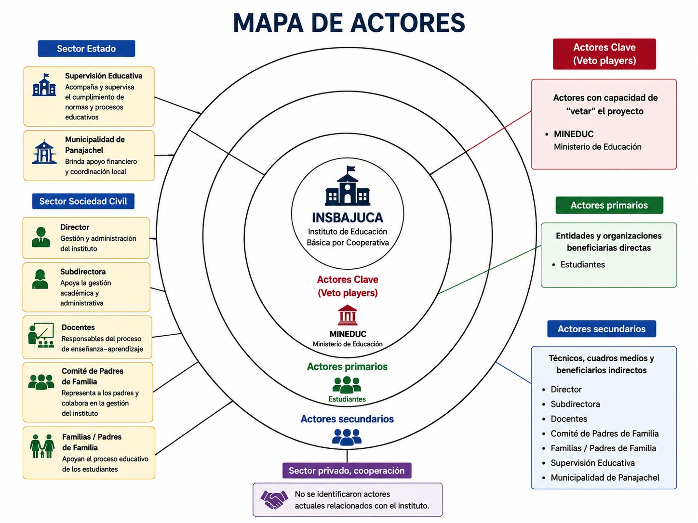
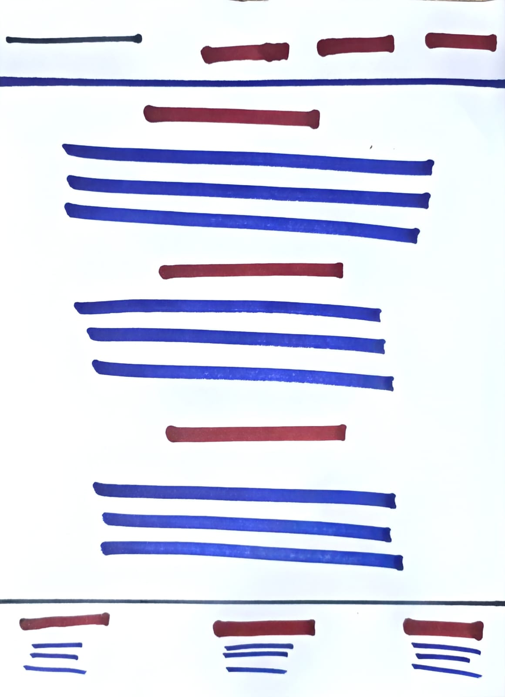

03 de agosto - Planificación Inicial
Realizamos nuestra primera reunión de trabajo para definir el contexto en el que desarrollaríamos el proceso de planificación estratégica bottom-up. Considerando nuestra experiencia como docentes, la relación previa con el establecimiento y la cercanía con nuestra comunidad, decidimos trabajar con INSBAJUCA.
Más información
En esta reunión, se discutieron los objetivos del proyecto y se establecieron las metas a alcanzar.
Como parte de esta primera etapa, elaboramos el mapa de actores para identificar a las personas e instituciones vinculadas con el establecimiento y orientar posteriormente la selección de los participantes. Además, debido a que el producto final del proyecto será presentado mediante un sitio web, desarrollamos un wireframe inicial para establecer la organización de sus principales secciones: Metodología, Desarrollo y Autores.

Wireframe
El wireframe es una representación visual de la estructura y el diseño del sitio web, que nos permite planificar la distribución de los elementos y la navegación entre las diferentes secciones.

06 de agosto - Acercamiento INSBAJUCA
Realizamos el primer acercamiento con INSBAJUCA para presentar la propuesta de desarrollar el ejercicio de planificación estratégica bottom-up con integrantes de su comunidad educativa.z
Como resultado de este acercamiento, se acordó realizar la actividad el lunes 10 de agosto a las 4:00 p. m., utilizando un espacio dentro del establecimiento y contando con la participación de catedráticos y autoridades de INSBAJUCA.
07 de agosto - Construcción inicial del sitio web
Iniciamos la construcción del sitio web que utilizaremos para documentar y presentar el desarrollo del proyecto. Tomando como referencia el wireframe elaborado previamente, establecimos la estructura inicial de la página e incorporamos el contenido desarrollado hasta el momento.
En esta etapa nos concentramos en organizar la información y establecer la estructura general del sitio. El diseño visual será trabajado posteriormente.
08 de agosto - Ejercicio de planificación estratégica
Para poder establecer una agenda antes del desarrollo del proyecto, nos reunimos los autores del proyecto para discutir las funciones que cada uno realizaría durante el desarrollo del mismo.
Adicionalmente, se definió el cronograma de actividades y se asignaron responsabilidades específicas a cada miembro del equipo.
09 de agosto - Diseño CSS para el sitio web
Continuamos con el desarrollo del sitio web, enfocándonos en mejorar su organización y presentación visual mediante CSS. Como parte de este proceso, decidimos crear una página separada para documentar el desarrollo del proyecto en forma de bitácora, facilitando la organización de las actividades realizadas durante cada etapa.
También comenzamos a implementar la paleta de colores del sitio, tomando como referencia los colores del logotipo, y realizamos ajustes en la presentación de los diferentes elementos de la página. Aunque todavía quedan aspectos por organizar y mejorar, estos cambios representan un avance importante en la construcción del sitio web.